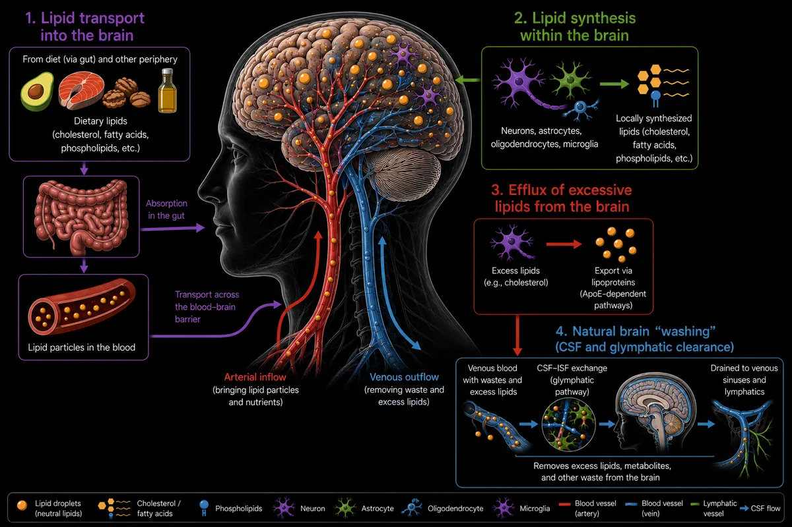

01
What proportion of brain lipids are acquired from the diet versus synthesized locally within the brain?
Brain is one of the most lipid-rich organs in the body, yet it remains unclear how much of its lipid content is derived from the diet versus synthesized locally within the central nervous system. Because the blood-brain barrier restricts movement of many circulating lipids, neural cells must tightly regulate lipid uptake and endogenous synthesis to maintain membrane integrity, myelination, and cellular signaling. Also, it remains unclear how excessive lipids that cannot be degraded like cholesterol are flushed out of brain. We seek to understand how the brain balances these distinct sources of lipids and how disruption of these pathways contributes to neurological disease.
